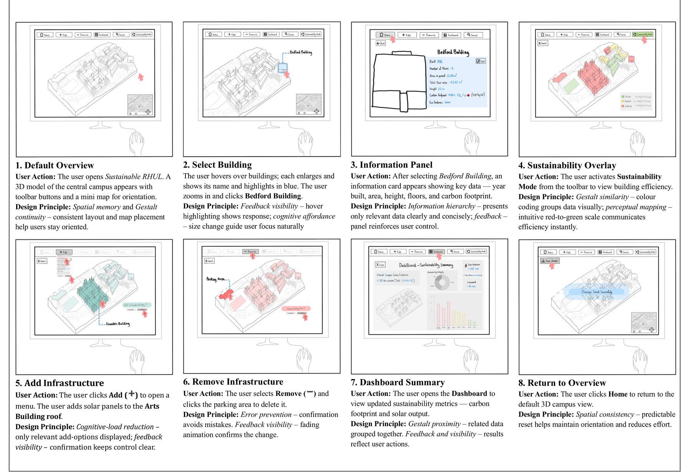

3D modelling
Designed the main 3D model of the campus, with buildings coloured by carbon intensity in three bands.
A campus you can walk around, coloured by carbon intensity.
A group VR prototype showing campus sustainability at more than one scale. I designed the main 3D model, the information pages and the storyboard, applying user-centred design principles.

Designed the main 3D model of the campus, with buildings coloured by carbon intensity in three bands.
An eight-screen storyboard of the user flow, each panel naming the user’s action and the design principle behind it.
Building pages with floors, floor area, carbon output and eco features, at the scale of one building or the whole campus.
Gestalt continuity, visible feedback and lower cognitive load, applied screen by screen.
Campus carbon arrives as one total in a report. It does not say which building is the problem or what a change would do.
A walkable model: pick a building, read its footprint, add solar panels or remove a car park, then see the dashboard total change.
A prototype and storyboard that show sustainability at building and campus scale, in one session.
Select any image to see it larger.